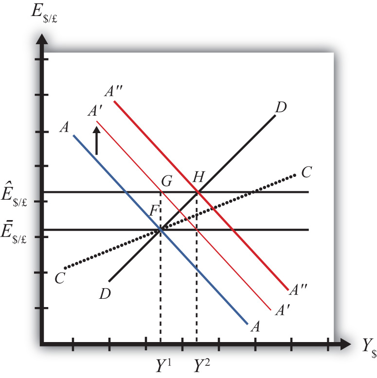
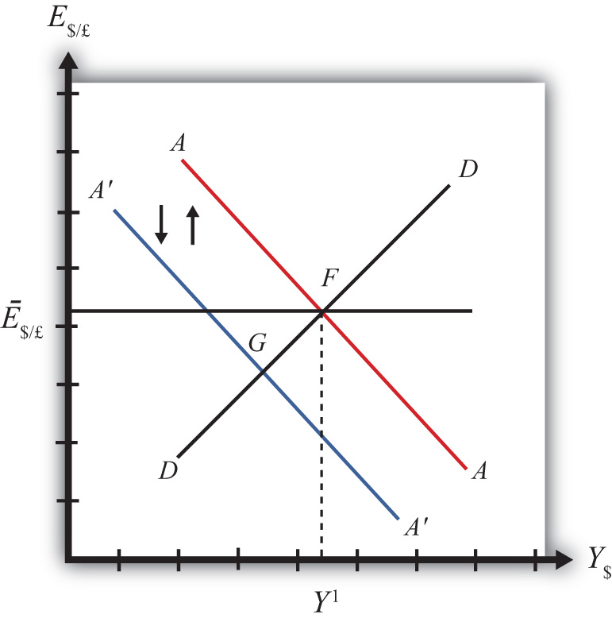

Government policies work differently under a system of fixed exchange rates rather than floating rates. Monetary policy can lose its effectiveness whereas fiscal policy can become supereffective. In addition, fixed exchange rates offer another policy option, namely, exchange rate policy. Even though a fixed exchange rate should mean the country keeps the rate fixed, sometimes countries periodically change their fixed rate.
This chapter considers these policies under the assumptions of the AA-DD model. It concludes with a case study about the decline of the Bretton Woods fixed exchange rate system that was in place after World War II.
This chapter uses the AA-DD model to describe the effects of fiscal, monetary, and exchange rate policy under a system of fixed exchange rates. Fiscal and monetary policies are the primary tools governments use to guide the macroeconomy. With fixed exchange rates, a third policy option becomes available—that is, exchange rate policy. Thus we also examine the effects of changes in the fixed exchange rate. These exchange rate changes are called devaluationsWhen the government lowers the value of its currency with respect to the reserve currency or to gold in a fixed exchange rate system. (sometimes competitive devaluations) and revaluationsWhen the government raises the value of its currency with respect to the reserve currency or to gold in a fixed exchange rate system..
In introductory macroeconomics courses, students learn how government policy levers can be used to influence the level of the gross national product (GNP), inflation rate, unemployment rate, and interest rates. In this chapter, that analysis is expanded to an open economy (i.e., one open to trade) and to the effects on exchange rates and current account balances.
Using the AA-DD model, several important relationships between key economic variables are shown:
The AA-DD model was developed to describe the interrelationships of macroeconomic variables within an open economy. Since some of these macroeconomic variables are controlled by the government, we can use the model to understand the likely effects of government policy changes. The main levers the government controls are monetary policy (changes in the money supply), fiscal policy (changes in the government budget), and exchange rate policy (setting the fixed exchange rate value). In this chapter, the AA-DD model is applied to understand government policy effects in the context of a fixed exchange rate system. In Chapter 21 "Policy Effects with Floating Exchange Rates", we considered these same government policies in the context of a floating exchange rate system. In Chapter 24 "Fixed versus Floating Exchange Rates", we’ll compare fixed and floating exchange rate systems and discuss the pros and cons of each system.
It is important to recognize that these results are what “would” happen under the full set of assumptions that describe the AA-DD model. These effects may or may not happen in reality. Nevertheless, the model surely captures some of the simple cause-and-effect relationships and therefore helps us to understand the broader implications of policy changes. Thus even if in reality many more elements (not described in the model) may act to influence the key endogenous variables, the AA-DD model at least gives a more complete picture of some of the expected tendencies.
Jeopardy Questions. As in the popular television game show, you are given an answer to a question and you must respond with the question. For example, if the answer is “a tax on imports,” then the correct question is “What is a tariff?”
In this section, we use the AA-DD model to assess the effects of monetary policy in a fixed exchange rate system. Recall from Chapter 18 "Interest Rate Determination" that the money supply is effectively controlled by a country’s central bank. In the case of the United States, this is the Federal Reserve Board, or the Fed. When the money supply increases due to action taken by the central bank, we refer to it as expansionary monetary policy. If the central bank acts to reduce the money supply, it is referred to as contractionary monetary policy. Methods that can be used to change the money supply are discussed in Chapter 18 "Interest Rate Determination", Section 18.5 "Controlling the Money Supply".
Suppose the United States fixes its exchange rate to the British pound at the rate Ē$/£. This is indicated in Figure 23.1 "Expansionary Monetary Policy with a Fixed Exchange Rate" as a horizontal line drawn at Ē$/£. Suppose also that the economy is originally at a superequilibrium shown as point F with original gross national product (GNP) level Y1. Next, suppose the U.S. central bank (the Fed) decides to expand the money supply by conducting an open market operation, ceteris paribus. Ceteris paribus means that all other exogenous variables are assumed to remain at their original values. A purchase of Treasury bonds by the Fed will lead to an increase in the dollar money supply. As shown in Chapter 20 "The AA-DD Model", Section 20.5 "Shifting the AA Curve", money supply changes cause a shift in the AA curve. More specifically, an increase in the money supply will cause AA to shift upward (i.e., ↑MS is an AA up-shifter). This is depicted in the diagram as a shift from the red AA to the blue A′A′ line.
Figure 23.1 Expansionary Monetary Policy with a Fixed Exchange Rate

The money supply increase puts upward pressure on the exchange rate in the following way. First, a money supply increase causes a reduction in U.S. interest rates. This in turn reduces the rate of return on U.S. assets below the rate of return on similar assets in Britain. Thus international investors will begin to demand more pounds in exchange for dollars on the private Forex to take advantage of the relatively higher RoR of British assets. In a floating exchange system, excess demand for pounds would cause the pound to appreciate and the dollar to depreciate. In other words, the exchange rate E$/£ would rise. In the diagram, this would correspond to a movement to the new A′A′ curve at point G.
However, because the country maintains a fixed exchange rate, excess demand for pounds on the private Forex will automatically be relieved by Fed intervention. The Fed will supply the excess pounds demanded by selling reserves of pounds in exchange for dollars at the fixed exchange rate. As we showed in Chapter 21 "Policy Effects with Floating Exchange Rates", Section 21.5 "Foreign Exchange Interventions with Floating Exchange Rates", Fed sales of foreign currency result in a reduction in the U.S. money supply. This is because when the Fed buys dollars in the private Forex, it is taking those dollars out of circulation and thus out of the money supply. Since a reduction of the money supply causes AA to shift back down, the final effect will be that the AA curve returns to its original position. This is shown as the up and down movement of the AA curve in the diagram. The final equilibrium is the same as the original at point F.
The AA curve must return to the same original position because the exchange rate must remain fixed at Ē$/£. This implies that the money supply reduction due to Forex intervention will exactly offset the money supply expansion induced by the original open market operation. Thus the money supply will temporarily rise but then will fall back to its original level. Maintaining the money supply at the same level also assures that interest rate parity is maintained. Recall that in a fixed exchange rate system, interest rate parity requires equalization of interest rates between countries (i.e., i$ = i£). If the money supply did not return to the same level, interest rates would not be equalized.
Thus after final adjustment occurs, there are no effects from expansionary monetary policy in a fixed exchange rate system. The exchange rate will not change and there will be no effect on equilibrium GNP. Also, since the economy returns to the original equilibrium, there is also no effect on the current account balance.
Contractionary monetary policy corresponds to a decrease in the money supply or a Fed sale of Treasury bonds on the open bond market. In the AA-DD model, a decrease in the money supply shifts the AA curve downward. The effects will be the opposite of those described above for expansionary monetary policy. A complete description is left for the reader as an exercise.
The quick effects, however, are as follows. U.S. contractionary monetary policy with a fixed exchange rate will have no effects within the economy. E$/£, Y$ and the current account balance will all be maintained or return to their initial levels.
This result indicates that monetary policy is ineffective in influencing the economy in a fixed exchange rate system. In contrast, in a floating exchange rate system, monetary policy can either raise or lower GNP, at least in the short run. Thus monetary policy has some effectiveness in a floating system, and central bank authorities can adjust policy to affect macroeconomic conditions within their economy. For example, if the economy is growing only sluggishly, or perhaps is contracting, the central bank can raise the money supply to help spur an expansion of GNP, if the economy has a floating exchange rate. However, with a fixed exchange rate, the central bank no longer has this ability. This explains why countries lose monetary autonomy (or independence) with a fixed exchange rate. The central bank can no longer have any influence over the interest rate, exchange rate, or the level of GNP.
One other important comparison worth making is between expansionary monetary policy in a fixed exchange rate system with sterilized foreign exchange (Forex) interventions in a floating system. In the first case, expansionary monetary policy is offset later with a contraction of the money supply caused by automatic Forex intervention. In the second case, Forex intervention leading to an expansion of the money supply is countered with contractionary open market operations. In the first case, the interest rate is maintained to satisfy interest rate parity. In the second case, the interest rate remains fixed by design. Clearly, these two situations represent exactly the same set of actions, though in a different order. Thus it makes sense that the two policies would have the same implications—that is, “no impact” on any of the economic variables.
Suppose that Latvia can be described with the AA-DD model and that Latvia fixes its currency, the lats (Ls), to the euro. Consider the changes in the exogenous variable in the left column. Indicate the short-run effects on the equilibrium levels of Latvian GNP, the Latvian interest rate (iLs) , the Latvian trade balance, and the exchange rate (ELs/€). Use the following notation:
+ the variable increases
− the variable decreases
0 the variable does not change
A the variable change is ambiguous (i.e., it may rise, it may fall)
| GNP | iLs | Trade Balance | ELs/€ | |
|---|---|---|---|---|
| An increase in the Latvian money supply | ||||
| A decrease in the Latvian money supply |
In this section, we use the AA-DD model to assess the effects of fiscal policy in a fixed exchange rate system. Recall from Chapter 19 "National Output Determination" that fiscal policy refers to any change in expenditures or revenues within any branch of the government. This means any change in government spending (e.g., transfer payments or taxes) by federal, state, or local governments represents a fiscal policy change. Since changes in expenditures or revenues will often affect a government budget balance, we can also say that a change in the government surplus or deficit represents a change in fiscal policy.
When government spending or transfer payments increase, or tax revenues decrease, we refer to it as expansionary fiscal policy. These actions would also be associated with an increase in the government budget deficit, or a decrease in its budget surplus. If the government acts to reduce government spending or transfer payments, or increase tax revenues, it is referred to as contractionary fiscal policy. These actions would also be associated with a decrease in the government budget deficit, or an increase in its budget surplus.
Suppose the United States fixes its exchange rate to the British pound at the rate Ē$/£. This is indicated in Figure 23.2 "Expansionary Fiscal Policy with a Fixed Exchange Rate" as a horizontal line drawn at Ē$/£. Suppose also that the economy is originally at a superequilibrium shown as point J with GNP at level Y1. Next, suppose the government decides to increase government spending (or increase transfer payments or decrease taxes). As shown in Chapter 20 "The AA-DD Model", Section 20.3 "Shifting the DD Curve", fiscal policy changes cause a shift in the DD curve. More specifically, an increase in government spending (or an increase in transfer payments or a decrease in taxes) will cause DD to shift rightward (i.e., ↑G, ↑TR, and ↓T all are DD right-shifters). This is depicted in the diagram as a shift from the red DD to the blue D′D′ line (step 1).
Figure 23.2 Expansionary Fiscal Policy with a Fixed Exchange Rate

If the expansionary fiscal policy occurs because of an increase in government spending, then government demand for goods and services (G&S) will increase. If the expansionary fiscal policy occurs due to an increase in transfer payments or a decrease in taxes, then disposable income will increase, leading to an increase in consumption demand. In either case, aggregate demand increases. Before any adjustment occurs, the increase in aggregate demand causes aggregate demand to exceed aggregate supply, which will lead to an expansion of GNP. Thus the economy will begin to move rightward from point J.
As GNP rises, so does real money demand, causing an increase in U.S. interest rates. With higher interest rates, the rate of return on U.S. assets rises above that in the United Kingdom and international investors increase demand for dollars (in exchange for pounds) on the private Forex. In a floating exchange rate system this would lead to a U.S. dollar appreciation (and pound depreciation)—that is, a decrease in the exchange rate E$/£.
However, because the country maintains a fixed exchange rate, excess demand for dollars on the private Forex will automatically be relieved by the U.S. Federal Reserve (or the Fed) intervention. The Fed will supply the excess dollars demanded by buying pounds in exchange for dollars at the fixed exchange rate. As we showed in Chapter 21 "Policy Effects with Floating Exchange Rates", Section 21.5 "Foreign Exchange Interventions with Floating Exchange Rates", the foreign currency purchases by the Fed result in an increase in the U.S. money supply. This is because when the Fed sells dollars in the private Forex, these dollars are entering into circulation and thus become a part of the money supply. The increase in the money supply causes the AA curve to shift up (step 2). The final equilibrium will be reached when the new A′A′ curve intersects the D′D′ curve at the fixed exchange rate (Ē$/£) shown at point K.
Note that in the transition, the Fed intervention in the Forex occurred because investors responded to rising U.S. interest rates by increasing demand for dollars on the Forex. The Fed’s response causes an increase in the money supply, which in turn will lower interest rates back to their original level. This result is necessary to maintain the fixed exchange rate interest rate parity (IRP) condition of i$ = i£.
Note also that as GNP increases in the transition, causing interest rates to rise, this rise is immediately countered with automatic Fed intervention in the Forex. Thus the exchange rate will never fall below the fixed rate. There will be pressure for the exchange rate to fall, but the Fed will always be there to relieve the pressure with its intervention. Thus the adjustment path from the original equilibrium at J to the final equilibrium at K will follow the rightward arrow between the two points along the fixed exchange rate.
The final result is that expansionary fiscal policy in a fixed exchange rate system will cause an increase in GNP (from Y1 to Y2) and no change in the exchange rate in the short run. Since the new equilibrium at K lies below the original CC curve representing a fixed current account balance, expansionary fiscal policy, consisting of an increase in G, will cause the current account balance to fall. This corresponds to a decrease in a trade surplus or an increase in a trade deficit.
Contractionary fiscal policy corresponds to a decrease in government spending, a decrease in transfer payments, or an increase in taxes. It would also be represented by a decrease in the government budget deficit or an increase in the budget surplus. In the AA-DD model, a contractionary fiscal policy shifts the DD curve leftward. The effects will be the opposite of those described above for expansionary fiscal policy. A complete description is left for the reader as an exercise.
The quick effects, however, are as follows. Contractionary fiscal policy in a fixed exchange rate system will cause a decrease in GNP and no change in the exchange rate in the short run. Contractionary fiscal policy, consisting of a decrease in G, will also cause the current account balance to rise. This corresponds to an increase in a trade surplus or a decrease in a trade deficit.
Sri Lanka fixes its currency, the Sri Lankan rupee (LKR), to the U.S. dollar. Suppose Sri Lanka can be described using the AA-DD model. Consider changes in the exogenous variables in Sri Lanka in the left column. Suppose each change occurs ceteris paribus. Indicate the short-run effects on the equilibrium values of Sri Lankan GNP, the Sri Lankan interest rate (iLKR), the Sri Lankan trade deficit, and the exchange rate (ELKR/$). Use the following notation:
+ the variable increases
− the variable decreases
0 the variable does not change
A the variable change is ambiguous (i.e., it may rise, it may fall)
| GNP | iLKR | Sri Lankan Trade Deficit | ELKR/$ | |
|---|---|---|---|---|
| A decrease in domestic taxes | ||||
| An increase in government demand | ||||
| An increase in transfer payments |
Consider the following occurrences. Use the AA-DD model to determine the impact on the variables (+, −, 0, or A) from the twin-deficit identity listed along the top row. Consider only short-run effects (i.e., before inflationary effects occur) and assume ceteris paribus for all other exogenous variables.
| Impact on | ||||
|---|---|---|---|---|
| Sp | I | IM − EX | G + TR − T | |
| A reduction in government spending with a fixed exchange rate | ||||
| An increase in transfer payments with fixed exchange rates | ||||
| A decrease in taxes with fixed exchange rates | ||||
In this section, we use the AA-DD model to assess the effects of exchange rate policy in a fixed exchange rate system. In a sense we can say that the government’s decision to maintain a fixed exchange is the country’s exchange rate policy. However, over time, the government does have some discretion concerning the value of the exchange rate. In this section, we will use “exchange rate policy” to mean changes in the value of the fixed exchange rate.
If the government lowers the value of its currency with respect to the reserve currency or to gold, we call the change a devaluation. If the government raises the value of its currency with respect to the reserve currency or to gold, we call the change a revaluation. The terms devaluation and revaluation should properly be used only in reference to a government change in the fixed exchange rate since each term suggests an action being taken. In contrast, natural market changes in supply and demand will result in changes in the exchange rate in a floating system, but it is not quite right to call these changes devaluations or revaluations since no concerted action was taken by anyone. Nonetheless, some writers will sometimes use the terms this way.
In most cases, devaluations and revaluations occur because of persistent balance of payments disequilibria. We will consider these situations in Chapter 23 "Policy Effects with Fixed Exchange Rates", Section 23.6 "Currency Crises and Capital Flight" on balance of payments crises and capital flight. In this section, we will consider the basic effects of devaluations and revaluations without assuming any notable prior events caused these actions to occur.
Suppose the United States fixes its exchange rate to the British pound at the rate Ē$/£. This is indicated in Figure 23.3 "Effects of a Devaluation" as a horizontal line drawn at Ē$/£. Suppose also that the economy is originally at a superequilibrium shown as point F with gross national product (GNP) at level Y1. Next, suppose the U.S. central bank (or the Fed) decides to devalue the U.S. dollar with respect to the British pound corresponding to an increase in the fixed rate from Ē$/£ to Ê$/£. Recall that a devaluation corresponds to an increase in the $/£ exchange rate. Assume that there was no anticipation of the devaluation and that it comes about as a complete surprise to all market participants.
Figure 23.3 Effects of a Devaluation
The first effect of the devaluation, of course, is that the exchange rate rises. Immediately the economy moves from F to G on the diagram. It may seem that this would move the economy off the AA curve, but instead the AA curve shifts up with the devaluation to A′A′. This occurs because the AA curve is a function of the expected exchange rate. As long as investors believe that the new exchange rate will now remain fixed at its new rate (Ê$/£), the expected future exchange rate will immediately rise to this new level as well. It is this increase in E$/£e that causes AA to shift up.
When at point G, however, the economy is not at a superequilibrium. Because of the dollar devaluation, the real exchange rate has increased, making foreign goods relatively more expensive and U.S. goods relatively cheaper. This raises aggregate demand, which at the new exchange rate (Ê$/£) is now at the level where the exchange rate line crosses the DD curve at point H.
Since the economy, for now, lies at G to the left of point H on the DD curve, aggregate demand exceeds supply. Producers will respond by increasing supply to satisfy the demand, and GNP will begin to rise.
As GNP rises, real money demand will rise, causing an increase in U.S. interest rates, which will raise the rate of return on U.S. assets. Investors will respond by increasing their demand for U.S. dollars on the foreign exchange (Forex) market, and there will be pressure for a dollar appreciation.
To maintain the fixed exchange rate, however, the U.S. Fed will have to automatically intervene on the Forex and sell dollars to satisfy the excess demand in exchange for pounds. This represents a balance of payments surplus since by buying pounds on the Forex the United States is adding to its stock of foreign reserves. A balance of payments surplus in turn causes an increase in the U.S. money supply, which will shift the AA curve to the right.
As GNP rises toward Y2 at point H, the AA curve will shift right with the Fed intervention to maintain the equilibrium exchange rate at the new fixed value, which is Ê$/£. The final superequilibrium occurs at point H where excess aggregate demand is finally satisfied.
The final result is that a devaluation in a fixed exchange rate system will cause an increase in GNP (from Y1 to Y2) and an increase in the exchange rate to the new fixed value in the short run. Since the new equilibrium at H lies above the original CC curve representing a fixed current account balance, a devaluation will cause the current account balance to rise. This corresponds to an increase in a trade surplus or a decrease in a trade deficit.
A revaluation corresponds to change in the fixed exchange rate such that the country’s currency value is increased with respect to the reserve currency. In the AA-DD model, a U.S. dollar revaluation would be represented as a decrease in the fixed $/£ exchange rate. The effects will be the opposite of those described above for a devaluation. A complete description is left for the reader as an exercise.
The quick effects, however, are as follows. A revaluation in a fixed exchange rate system will cause a decrease in GNP and a decrease in the fixed exchange rate in the short run. A revaluation will also cause the current account balance to fall. This corresponds to a decrease in a trade surplus or an increase in a trade deficit.
Vietnam fixes its currency, the Vietnamese dong (VND), to the US dollar. Suppose Vietnam can be described using the AA-DD model. Consider changes in the exogenous variables in Vietnam in the left column. Suppose each change occurs ceteris paribus. Indicate the short-run effects on the equilibrium values of Vietnamese GNP, the Vietnamese interest rate (iVND), the Vietnamese trade deficit, and the exchange rate (EVND//$). Use the following notation:
+ the variable increases
− the variable decreases
0 the variable does not change
A the variable change is ambiguous (i.e., it may rise, it may fall)
| GNP | iVND | EVND/$ | |
|---|---|---|---|
| A devaluation of the Vietnamese dong | |||
| A revaluation of the Vietnamese dong |
Consider the following occurrences. Use the AA-DD model to determine the impact on the variables (+, −, 0, or A) from the twin-deficit identity listed along the top row. Consider only short-run effects (i.e., before inflationary effects occur) and assume ceteris paribus for all other exogenous variables.
| Impact on | ||||
|---|---|---|---|---|
| Sp | I | IM − EX | G + TR − T | |
| A currency devaluation under fixed exchange rates | ||||
| A currency revaluation under fixed exchange rates | ||||
China maintains an exchange rate fixed to the U.S. dollar at the rate E1. Use the following AA-DD diagram for China to depict answers to the questions below. Suppose China’s current account is in surplus originally. Suppose YF indicates the full employment level of output.
Figure 23.4

Suppose the United States fixes its exchange rate to the British pound. In this circumstance, the exchange rate system is a reserve currency standard in which the British pound is the reserve currency. The U.S. government is the one that fixes its exchange rate and will hold some quantity of British pounds on reserve so it is able to intervene on the Forex to maintain the credible fixed exchange rate.
It is worth noting that since the United States fixes its exchange rate to the pound, the British pound is, of course, fixed to the U.S. dollar as well. Since the pound is the reserve currency, however, it has a special place in the monetary system. The Bank of England, Britain’s central bank, will never need to intervene in the Forex market. It does not need to hold dollars. Instead, all market pressures for the exchange rate to change will be resolved by U.S. intervention, that is, by the nonreserve currency country.
Now let’s suppose that the reserve currency country, Britain, undertakes expansionary monetary policy. We will consider the impact of this change from the vantage point of the United States, the nonreserve currency country. Suppose the United States is originally in a superequilibrium at point F in the adjoining diagram with the exchange rate fixed at Ē$/£. An increase in the British money supply will cause a decrease in British interest rates, i£.
As shown in Chapter 20 "The AA-DD Model", Section 20.5 "Shifting the AA Curve", foreign interest rate changes cause a shift in the AA curve. More specifically, a decrease in the foreign interest rate will cause the AA curve to shift downward (i.e., ↓i£ is an AA down-shifter). This is depicted in Figure 23.5 "Expansionary Monetary Policy by a Reserve Country" as a shift from the red AA to the blue A′A′ line.
Figure 23.5 Expansionary Monetary Policy by a Reserve Country
The money supply decrease puts downward pressure on the exchange rate in the following way. When British interest rates fall, it will cause i£ < i$ and interest rate parity (IRP) will be violated. Thus international investors will begin to demand more dollars in exchange for pounds on the private Forex to take advantage of the relatively higher rate of return on U.S. assets. In a floating exchange system, excess demand for dollars would cause the dollar to appreciate and the pound to depreciate. In other words, the exchange rate (E$/£) would fall. In the diagram, this would correspond to a movement to the new A′A′ curve at point G.
Because the country maintains a fixed exchange rate, however, excess demand for dollars on the private Forex will automatically be relieved by the U.S. Federal Reserve (or the Fed) intervention. The Fed will supply the excess dollars demanded by buying pounds in exchange for dollars at the fixed exchange rate. As we showed in Chapter 21 "Policy Effects with Floating Exchange Rates", Section 21.5 "Foreign Exchange Interventions with Floating Exchange Rates", the foreign currency purchases by the Fed result in an increase in the U.S. money supply. This is because when the Fed sells dollars in the private Forex, these dollars are entering into circulation and thus become a part of the money supply. Since an increase in the money supply causes AA to shift up, the AA curve will return to its original position to maintain the fixed exchange rate. This is shown as the up-and-down movement of the AA curve in the diagram. Thus the final equilibrium is the same as the original equilibrium at point F.
Remember that in a fixed exchange rate system, IRP requires equalization of interest rates between countries. When the British interest rates fell, they fell below the rates in the United States. When the U.S. Fed intervenes on the Forex, however, the U.S. money supply rises and U.S. interest rates are pushed down. Pressure for the exchange rate to change will cease only when U.S. interest rates become equal to British interest rates and IRP (i£ = i$) is again satisfied.
Thus after final adjustment occurs, expansionary monetary policy by the foreign reserve currency country in a fixed exchange rate system causes no effects on U.S. GNP or the exchange rate. Since the economy also returns to the original equilibrium, there is also no effect on the current account balance. Fed intervention in the Forex to maintain the fixed exchange rate, however, will cause U.S. interest rates to fall to maintain IRP with the lower reserve country interest rates.
Contractionary monetary policy corresponds to a decrease in the British money supply that would lead to an increase in British interest rates. In the AA-DD model, an increase in foreign interest rates shifts the AA curve upward. The effects will be the opposite of those described above for expansionary monetary policy. A complete description is left for the reader as an exercise.
Honduras fixes its currency, the Honduran lempira (HNL), to the U.S. dollar. Suppose Honduras can be described using the AA-DD model. Consider changes in the exogenous variables in the left column. Suppose each change occurs ceteris paribus. Indicate the short-run effects on the equilibrium values of Honduran GNP, the Honduran interest rate (iHNL), the Honduran trade deficit, and the exchange rate (EHNL/$). Use the following notation:
+ the variable increases
− the variable decreases
0 the variable does not change
A the variable change is ambiguous (i.e., it may rise, it may fall)
| GNP | iHNL | EHNL/$ | |
|---|---|---|---|
| An increase in U.S. interest rates | |||
| A decrease in U.S. interest rates |
Consider the following occurrences. Use the AA-DD model to determine the impact on the variables (+, −, 0, or A) from the twin-deficit identity listed along the top row. Consider only short-run effects (i.e., before inflationary effects occur) and assume ceteris paribus for all other exogenous variables.
| Impact on | ||||
|---|---|---|---|---|
| Sp | I | IM − EX | G + TR − T | |
| An increase in foreign interest rates under fixed exchange rates | ||||
| A decrease in foreign interest rates under fixed exchange rates | ||||
To maintain a credible fixed exchange rate system, a country will need to buy and sell the reserve currency whenever there is excess demand or supply in the private foreign exchange (Forex). To make sales of foreign currency possible, a country will need to maintain a foreign exchange reserve. The reserve is a stockpile of assets denominated in the reserve currency. For example, if the United States fixes the dollar to the British pound, then it would need to have a reserve of pound assets in case it needs to intervene on the Forex with a sale of pounds.
Generally, a central bank holds these reserves in the form of Treasury bonds issued by the reserve country government. In this way, the reserve holdings earn interest for the central bank and thus the reserves will grow in value over time. Holding reserves in the form of currency would not earn interest and thus are less desirable. Nonetheless, a central bank will likely keep some of its reserves liquid in the form of currency to make anticipated daily Forex transactions. If larger sales of reserves become necessary, the U.S. central bank can always sell the foreign Treasury bonds on the bond market and convert those holdings to currency.
A fixed exchange rate is sustainable if the country’s central bank can maintain that rate over time with only modest interventions in the Forex. Ideally, one would expect that during some periods of time, there would be excess demand for domestic currency on the Forex, putting pressure on the currency to appreciate. In this case, the central bank would relieve the pressure by selling domestic currency and buying the reserve on the Forex, thus running a balance of payments (BoP) surplus. During these periods, the country’s reserve holdings would rise. At other periods, there may be excess demand for the reserve currency, putting pressure on the domestic currency to depreciate. Here, the central bank would relieve the pressure by selling the reserve currency in exchange for domestic currency, thus running a balance of payments deficit. During these periods, the country’s reserve holdings would fall. As long as the country’s reserve holdings stay sufficiently high during its ups and downs, the fixed exchange rate could be maintained indefinitely. In this way, the central bank’s interventions “smooth-out” the fluctuations that would have occurred in a floating system.
Problems arise if the reserves cannot be maintained if, for example, there is a persistent excess demand for the foreign currency over time with very few episodes of excess supply. In this case, the central bank’s persistent BoP deficits will move reserve holdings closer and closer to zero. A balance of payments crisis occurs when the country is about to run out of foreign exchange reserves.
Several things may happen leading up to a balance of payments crisis. One option open to the central bank is to borrow additional quantities of the reserve currency from the reserve country central bank, government, or an international institution like the International Monetary Fund (IMF). The IMF was originally created to help countries with balance of payments problems within the Bretton Woods fixed exchange rate system (1945–1973). When a country was near to depleting its reserves, it could borrow reserve currency from the IMF. As long as the balance of payments deficits leading to reserve depletion would soon be reversed with balance of payments surpluses, the country would be able to repay the loans to the IMF in the near future. As such, the IMF “window” was intended to provide a safety valve in case volatility in supply and demand in the Forex was greater than a country’s reserve holdings could handle.
If a country cannot acquire additional reserves and if it does not change domestic policies in a way that causes excess demand for foreign currency to cease or reverse, then the country will run out of foreign reserves and will no longer be able to maintain a credible fixed exchange rate. The country could keep the fixed exchange rate at the same level and simply cease intervening in the Forex; however, this would not relieve the pressure for the currency to depreciate and would quickly create conditions for a thriving black market.
If the country remains committed to a fixed exchange rate system, its only choice is to devalue its currency with respect to the reserve. A lower currency value will achieve two things. First, it will reduce the prices of all domestic goods from the viewpoint of foreigners. In essence, a devaluation is like having a sale in which all the country’s goods are marked down by some percentage. At the same time, the devaluation will raise the price of foreign goods to domestic residents. Thus foreign goods have all been marked up in price by some percentage. These changes should result in an increase in demand for domestic currency to take advantage of the lower domestic prices and a decrease in demand for foreign currency due to the higher foreign prices.
The second effect occurs for investors. When the currency is devalued, the rate of return on foreign assets may fall, especially if investors had anticipated a devaluation and had adjusted their expectations accordingly. (See the next section on capital flight for further discussion.) When the rate of return on foreign assets falls, the demand for foreign currency will also fall.
If the devaluation is large enough to reverse the currency demand in the Forex, generating excess demand for the domestic currency, the central bank will have to buy foreign reserves to maintain the new devalued exchange rate and can begin to accumulate a stockpile of reserves once again.
Balance of payments crises are often anticipated by investors in the marketplace. When this occurs it will result in capital flight, which in turn is likely to aggravate the balance of payments crisis. Here’s why.
The interest rate parity condition holds when rates of return on domestic and foreign assets are equalized. Recall from Chapter 22 "Fixed Exchange Rates", Section 22.3 "Interest Rate Parity with Fixed Exchange Rates" that in a fixed exchange rate system the IRP condition simplifies to equalization of interest rates between two countries. However, this result assumed that investors expected the currency to remain fixed indefinitely. If investors believe instead that a country is about to suffer a balance of payments crisis and run out of foreign reserves, they will also anticipate that a devaluation will occur soon.
Assume as before that the United States fixes its currency to the British pound. The interest rate parity condition can be written as
where the left side is the rate of return on U.S. assets, equal to the average U.S. interest rate, and the right side is the rate of return on British assets. When there is no imminent balance of payments crisis, investors should expect the future exchange rate (E$/£e) to equal the current fixed exchange rate (E$/£) and the interest parity condition simplifies to i$ = i£. However, if investors recognize that the central bank is selling large quantities of its foreign reserves in the Forex regularly, then they are likely also to recognize that the balance of payments deficits are unsustainable. Once the reserves run out, the central bank will be forced to devalue its currency. Thus forward-looking investors should plan for that event today. The result is an increase in the expected exchange rate, above the current fixed rate, reflecting the expectation that the dollar will be devalued soon.
This, in turn, will increase the expected rate of return of British assets, raising the right side of the above expression. Now, RoR£ > RoR$, and investors will increase demand for British pounds on the Forex. In this instance, investors are “fleeing” their own domestic assets to purchase foreign assets (or capital) that now have a greater expected return. Thus the action is called capital flightRefers to investors purchasing assets abroad in anticipation of an imminent currency devaluation or depreciation, often in the midst of a balance of payments crisis..
The intuition for capital flight is simple. If an investor expects the domestic currency (and assets denominated in that currency) will soon fall in value, it is better to sell now before the value actually does fall. Also, as the domestic currency falls in value, the British pound is expected to rise in value. Thus it is wise to buy British pounds and assets while their prices are lower and profit on the increase in the pound value when the dollar devaluation occurs.
The broader effect of capital flight, which occurs in anticipation of a balance of payments crisis, is that it can actually force a crisis to occur much sooner. Suppose the United States was indeed running low on foreign reserves after running successive balance of payments deficits. Once investors surmise that a crisis may be possible soon and react with a change in their expected exchange rate, there will be a resulting increase in demand for pounds on the Forex. This will force the central bank to intervene even further in the Forex by selling foreign pound reserves to satisfy investor demand and to keep the exchange rate fixed. However, additional interventions imply an even faster depletion of foreign reserve holdings, bringing the date of crisis closer in time.
It is even possible for investor behavior to create a balance of payments crisis when one might not have occurred otherwise. Suppose the U.S. central bank (or the Fed) depletes reserves by running balance of payments deficits. However, suppose the Fed believes the reserve holdings remain adequate to defend the currency value, whereas investors believe the reserve holdings are inadequate. In this case, capital flight will likely occur that would deplete reserves much faster than before. If the capital flight is large enough, even if it is completely unwarranted based on market conditions, it could nonetheless deplete the remaining reserves and force the central bank to devalue the currency.
There is one other possible response for a country suffering from a balance of payments crisis. The country could always give up on the fixed exchange rate system and allow its currency to float freely. This means the central bank no longer needs to intervene on the Forex and the exchange rate value will be determined by daily supply and demand conditions on the private Forex. Since the reason for the BoP crisis was continual pressure for the currency to depreciate, moving to a floating system would undoubtedly result in a rapidly depreciating currency.
The main advantage of returning to a floating exchange rate is that the private Forex market will quickly move the exchange rate to the level that equalizes supply and demand. In contrast, many times countries that devalue their fixed exchange rate do not devalue sufficiently and a second devaluation becomes necessary shortly thereafter. When the countries in the Bretton Woods system switched to floating rates in 1973, the original intention was to allow markets to adjust to the equilibrium exchange rates reflecting market conditions and then to refix the exchange rates at the sustainable equilibrium level. However, an agreement to reestablish fixed rates was never implemented. The U.S. dollar and many other currencies have been floating ever since.
A second advantage of switching to a floating system is that it relieves the central bank from the necessity of maintaining a stockpile of reserves. Thus the whole problem of balance of payments crises disappears completely once a country lets its currency float.
In July 1944, delegates from forty-five of the allied powers engaged in World War II met in Bretton Woods, New Hampshire, in the United States to plan for the economic institutions believed necessary to assist in the reconstruction, development, and growth of the postwar economy. Foremost on the delegates’ minds was the instability of the international economic system after World War I, including the experiences of hyperinflation as in Germany in 1922–1923 and the worldwide depression of the 1930s. One element believed necessary to avoid repeating the mistakes of the past was to implement a system of fixed exchange rates. Not only could fixed exchange rates help prevent inflation, but they could also eliminate uncertainties in international transactions and thus serve to promote the expansion of international trade and investment. It was further hoped that economic interconnectedness would make it more difficult for nationalism to reassert itself.
The Bretton Woods system of exchange rates was set up as a gold exchange standard, a cross between a pure gold standard and a reserve currency standard. In a gold exchange standard, one country is singled out to be the reserve currency. In the Bretton Woods case, the currency was the U.S. dollar. The U.S. dollar was fixed to a weight in gold, originally set at $35 per ounce. The U.S. central bank agreed to exchange dollars for gold on demand, but only with foreign central banks. In a pure gold standard, the central bank would exchange gold for dollars with the general public as well.
The nonreserve countries agreed to fix their currencies to the U.S. dollar or to gold.More accurately, countries agreed to establish a “par value” exchange rate to the dollar and to maintain the exchange to within a 1 percent band around that par value. However, this detail is not an essential part of the story that follows. However, there was no obligation on the part of the nonreserve countries to exchange their currencies for gold. Only the reserve country had that obligation. Instead, the nonreserve-currency countries were obliged to maintain the fixed exchange rate to the U.S. dollar by intervening on the foreign exchange (Forex) market and buying or selling dollars as necessary. In other words, when there was excess demand on the Forex for the home currency in exchange for dollars, the nonreserve central bank would supply their currency and buy dollars, thus running a balance of payments surplus, to maintain the fixity of their exchange rate. Alternatively, when there was excess supply of the home currency, in exchange for dollars, the nonreserve central bank would supply dollars and buy its own currency on the Forex, resulting in a balance of payments deficit. Thus for all nonreserve countries the Bretton Woods system functioned like a reserve currency standard.
One of the problems that typically arises with a reserve currency standard is the persistence of balance of payments (BoP) deficits. BoP deficits require a country to sell its dollar reserves on the Forex market. When these deficits are recurring and large, a country will eventually run out of reserves. When that happens, it will no longer be able to defend its fixed currency value. The likely outcome would be a devaluation, an action that runs counter to the goals of the system, namely to maintain exchange rate stability and to ward off inflationary tendencies.
To provide a safety valve for countries that may face this predicament, the International Monetary Fund (IMF) was established to provide temporary loans to countries to help maintain their fixed exchange rates. Each member country was required to maintain a quota of reserves with the IMF that would then be available to lend to those countries experiencing balance of payments difficulties.
Today the IMF maintains the same quota system and member countries enjoy the same privilege to borrow even though many are no longer maintaining a fixed exchange rate. Instead, many countries borrow from the IMF when they become unable to maintain payments on international debts. Go to the IMF Factsheet for more information about the current quota system.International Monetary Fund, Factsheet, “IMF Quotas,” http://www.imf.org/external/np/exr/facts/quotas.htm
The Bretton Woods exchange rate system was an imperfect system that suffered under many strains during its history. Nonetheless, it did achieve fixed exchange rates among its members for almost thirty years. For a more detailed, though brief, account of the history of the system, see Benjamin Cohen’s article.Benjamin Cohen, “Bretton Woods System,” http://www.polsci.ucsb.edu/faculty/cohen/recent/bretton.html.
We can learn much about the intended workings of the system by studying the system’s collapse. The collapse occurred mostly because the United States would not allow its internal domestic policies to be compromised for the sake of the fixed exchange rate system. Here’s a brief account of what happened. For a more detailed account, see Barry Eichengreen’s Globalizing CapitalBarry Eichengreen, Globalizing Capital: A History of the International Monetary System (Princeton, NJ: Princeton University Press, 1996). and Alfred Eckes’s A Search for Solvency.Alfred E. Eckes Jr., A Search for Solvency (Austin, TX: University of Texas Press, 1975).
Throughout the 1960s and early 1970s, there was excessive supply of U.S. dollars on Forex markets in exchange for other currencies. This put pressure on the U.S. dollar to depreciate and nonreserve currencies to appreciate. To maintain the fixed exchange rate, nonreserve countries were required to intervene on the private Forex. For example, the British central bank was required to run a balance of payments surplus, buy the excess dollars, and sell pounds on the private Forex market.
As was shown in Chapter 23 "Policy Effects with Fixed Exchange Rates", Section 23.6 "Currency Crises and Capital Flight", persistent balance of payments surpluses do not pose a long-term problem in the same way as BoP deficits. The British central bank had an unlimited capacity to “print” as many pounds as necessary to buy the oversupplied dollars on the Forex. However, persistently large BoP surpluses will result in an ever-increasing British money supply that will lead to inflationary effects eventually.
Indeed, U.S. inflation was rising, especially in the late 1960s. Federal government spending was rising quickly—first, to finance the Vietnam War, and second, to finance new social spending arising out of President Johnson’s Great Society initiatives. Rather than increasing taxes to finance the added expenses, the United States resorted to expansionary monetary policy, effectively printing money to finance growing government budget deficits. This is also called “monetizing the debt.”
The immediate financial impact of a rising U.S. money supply was lower U.S. interest rates, leading to extra demand for foreign currency by investors to take advantage of the higher relative rates of return outside the United States. The longer-term impact of a rising U.S. money supply was inflation. As U.S. prices rose, U.S. goods became relatively more expensive relative to foreign goods, also leading to extra demand for foreign currency.
A look at the statistics of the 1960s belies this story of excessive monetary expansion and fiscal imprudence. Between 1959 and 1970, U.S. money supply growth and U.S. inflation were lower than in every other G-7 country. U.S. government budget deficits were also not excessively large. Nonetheless, as Eichengreen suggests, the G-7 countries could support a much higher inflation rate than the United States since they were starting from such low levels of GDP in the wake of post–World War II reconstruction.Barry Eichengreen, Globalizing Capital: A History of the International Monetary System (Princeton, NJ: Princeton University Press, 1996), 131. Thus the U.S. policy required to maintain a stable exchange rate without intervention would correspond to an inflation rate that was considerably lower vis-à-vis the other G-7 countries.
In any case, to maintain the fixed exchange rate, non-U.S. countries’ central banks needed to run balance of payments surpluses. BoP surpluses involved a nonreserve central bank purchase of dollars and sale of their own domestic currency. Thus the German, British, French, Japanese, et al., central banks bought up dollars in great quantities and at the same time continually increased their own domestic money supplies.
One effect of the continual balance of payments surpluses was a subsequent increase in inflation caused by rising money supplies in the nonreserve countries. In effect, expansionary monetary policy in the United States, and its inflationary consequences, are exported to the nonreserve countries by virtue of the fixed exchange rate system. This effect was not welcomed by the nonreserve countries like Britain, France, and Germany.
A second effect of the continual balance of payments surpluses was a rising stock of dollar reserves. Nonreserve central banks held those reserves in the form of U.S. Treasury bills; thus, increasingly, U.S. government debt was held by foreign countries.
Although such BoP surpluses could technically continue indefinitely, the inflationary consequences in Europe and Japan and the rising dollar holdings abroad put the sustainability of the system into question. Ideally in a fixed exchange system, BoP surpluses will be offset with comparable BoP deficits over time, if the exchange rate is fixed at an appropriate (i.e., sustainable) level. Continual BoP surpluses, however, indicate that the sustainable exchange rate should be at a much lower U.S. dollar value if the surpluses are to be eliminated. Recognition of this leads observers to begin to expect a dollar devaluation.
If (or when) a dollar devaluation occurred, dollar asset holdings by foreigners—including the U.S. government Treasury bills comprising the reserves held by foreign central banks—would suddenly fall in value. In other words, foreign asset holders would lose a substantial amount of money if the dollar were devalued.
For private dollar investors there was an obvious response to this potential scenario: divest of dollar assets—that is, sell dollars and convert to pounds, deutschmarks, or francs. This response in the late 1960s and early 1970s contributed to the capital flight from the U.S. dollar, put added downward pressure on the U.S. dollar value, and led to even greater BoP surpluses by nonreserve central banks.
The nonreserve central banks, on the other hand, could not simply convert dollars to pounds or francs, as this would add to the pressure for a depreciating dollar. Further, it was their dollar purchases that were preventing the dollar depreciation from happening in the first place.
During the 1960 and early 1970s the amount of U.S. dollar reserves held by nonreserve central banks grew significantly, which led to what became known as the Triffin dilemmaThe problem of excessive U.S. dollar holdings by foreign central banks. (dollar overhang). Robert Triffin was a Belgian economist and Yale University professor who highlighted the problems related to dollar overhang. Dollar overhang occurred when the amount of U.S. dollar assets held by nonreserve central banks exceeded the total supply of gold in the U.S. Treasury at the exchange rate of $35 per ounce. Dollar overhang occurred in the system by 1960 and continued to worsen throughout the decade of the 1960s. By 1971 foreign holdings of U.S. dollars stood at $50 billion while U.S. gold reserves were valued at only $15 billion.Déclaration de Valéry Giscard d’Estaing à l’Assemblée nationale (12 mai 1971), dans La politique étrangère de la France. 1er semestre, octobre 1971, pp. 162–67. Translated by le CVCE [Declaration by Valerie Giscargd’Estaing to the National Assembly (May 12, 1971)].
Under the Bretton Woods system, foreign central banks were allowed to exchange their dollars for gold at the rate of $35 per ounce. Once the dollar overhang problem arose, it became conceivable that the United States could run out of its reserve asset—gold. Thus the potential for this type of BoP deficit could lead to speculation that the U.S. dollar would have to be devalued at some point in the future.
Now, if one expects the dollar will fall in value at some future date, then it would make sense to convert those dollars to something that may hold its value better; gold was the alternative asset. Throughout the 1950s and 1960s, foreign central banks did convert some of their dollar holdings to gold, but not all. In 1948, the United States held over 67 percent of the world’s monetary gold reserves. By 1970, however, the U.S. gold holdings had fallen to just 16 percent of the world total.Alfred E. Eckes Jr., A Search for Solvency (Austin, TX: University of Texas Press, 1975), 238. In a gold exchange standard, the linkage between gold and the reserve currency is supposed to provide the constraint that prevents the reserve currency country from excessive monetary expansion and its subsequent inflationary effects. However, in the face of BoP deficits leading to a severe depletion of gold reserves, the United States had several adjustment options open.
One option was a devaluation of the dollar. However, this option was not easy to implement. The U.S. dollar could not be devalued with respect to the pound, the franc, or the yen since the United States did not fix its currency to them. (Recall that the other countries were fixed to the dollar.) Thus the only way to realize this type of dollar devaluation was for the other countries to “revalue” their currencies with respect to the dollar. The other “devaluation” option open to the United States was devaluation with respect to gold. In other words, the United States could raise the price of gold to $40 or $50 per ounce or more. However, this change would not change the fundamental conditions that led to the excess supply of dollars. At most, this devaluation would only reduce the rate at which gold flowed out to foreign central banks. Also, since U.S. gold holdings had fallen to very low levels by the early 1970s and since the dollar overhang was substantial, the devaluation would have had to be extremely large to prevent the depletion of U.S. gold reserves.
The other option open to the United States was a change in domestic monetary policy to reduce the excess supply of dollars on the Forex. Recall that money supply increases were high to help finance rising federal deficit spending. A reversal of this policy would mean a substantial reduction in the growth of the money supply. If money supply increases were not available to finance the budget deficit, the government would have to resort to a much more unpopular method of financing—that is, raising taxes or reducing spending.
The unpopularity and internal difficulty of such fiscal and monetary prudence led the United States to resort to other options. One suggestion made repeatedly by the United States was that the nonreserve countries should “revalue” their currencies to the dollar. However, their response was that the fundamental problem was not their fault; therefore, they shouldn’t be the ones to implement a solution. Instead, it was the United States that needed to change.
By the spring of 1971, the imbalances in the system reached crisis proportions. In April 1971, the Bundesbank (Germany’s central bank) purchased over $3 billion to maintain the fixed exchange rate. In early May, it bought over $2 billion in just two days to maintain the rate. Fearing inflation after such huge purchases, Germany decided to let its currency float to a new value, 8 percent higher than its previous fixed rate. Austria, Holland, and Switzerland quickly followed suit.Alfred E. Eckes Jr., A Search for Solvency (Austin, TX: University of Texas Press, 1975), 261. Despite these revaluations, they were insufficient to stem the excess supply of dollars on the Forex. By August 1971, another major realignment seemed inevitable that substantially increased the pace of dollar capital flight. On August 15, 1971, President Nixon announced a bold plan for readjustment. The plan had three main aspects:
The import surcharge meant that an extra 10 percent would be assessed over the existing import tariff. This was implemented to force other countries to the bargaining table where, presumably, they would agree to a multilateral revaluation of their currencies to the dollar. The tax was especially targeted to pressure Japan, which had not revalued its currency as others had done during the previous years, to agree to a revaluation. The 10 percent import tax effectively raised the prices of foreign goods in U.S. markets and would have a similar effect as a 10 percent currency revaluation. The expectation was that the average revaluation necessary to bring the system into balance would be somewhat less than 10 percent, thus an 8 percent revaluation, say, would be less painful to exporters than a 10 percent import tax.
The suspension of dollar-gold convertibility was really the more significant change as it effectively ended the gold exchange standard and marked the death of the Bretton Woods system. With no obligation to exchange gold for dollars, the system essentially was changed to a reserve currency system. Previous constraints on the United States, caused when it runs a BoP deficit and loses gold reserves, were thus eliminated. There was no longer a possibility that the United States could run out of gold.
The wage and price controls, implemented for a ninety-day period, put added pressure on foreign exporters. Being forced to pay a 10 percent surcharge but not being allowed to raise prices meant they would not be allowed to push the tax increase onto consumers.
These three measures together resulted in a rapid renegotiation of the Bretton Woods system, culminating in the Smithsonian AgreementA 1971 agreement meant to salvage the Bretton Woods system of fixed exchange rates. in December 1971. In this agreement, the nonreserve countries accepted an average 8 percent revaluation of their currencies to the dollar in return for the elimination of the import surcharge. They also enlarged the currency bands around the par values from 1 percent to 2.25 percent. By virtue of the revaluations, the dollar naturally became “devalued.” The United States also devalued dollars with respect to gold, raising the price to $38 per ounce. However, since the United States did not agree to reopen the gold window, the change in the price of gold was meaningless.
More important, since the United States no longer needed to be concerned about a complete loss of gold reserves, the dollar overhang problem was “solved,” and it was free to continue its monetary growth and inflationary policies. During the following year, the United States did just that; within a short time, there arose renewed pressure for the dollar to depreciate from its new par values.
In the end, the Smithsonian Agreement extended the life of Bretton Woods for just over a year. By March 1973, a repeat of the severe dollar outflows in 1971 led to a suspension of Forex trading for almost three weeks. Upon reopening, the major currencies were floating with respect to each other. The Bretton Woods system was dead.
The hope at the time was that floating rates could be allowed for a time to let exchange rates move to their market equilibrium rates. Once stability to the exchange rates was restored, a new fixed exchange rate system could be implemented. However, despite negotiations, an agreement was never reached, and a unified international system of fixed exchange rates has never since been tried.
In theory, a gold-exchange standard can work to provide exchange rate stability and reduce inflationary tendencies. However, it will only work if the reserve currency country maintains prudent monetary policies and if countries follow the rules of the system.
For the nonreserve countries, their task was to avoid balance of payments deficits. These deficits would arise if they pursued excessive expansionary monetary policy. The lower interest rates and eventual inflation would lead to capital flight, creating pressure for the currency to depreciate. To avoid a devaluation, and hence to follow the fixity rule, the nonreserve country would have to contract its money supply to take pressure off its currency and to reverse the BoP deficits.
The problem that usually arises here is that contractionary monetary policies will raise interest rates and eliminate an important source of government budget financing, namely debt monetization (printing money). These changes are likely to result in an increase in taxes, a decrease in government spending, a contraction of the economy, and a loss of jobs. Thus following the rules of the system will sometimes be painful.
However, this was not the source of the Bretton Woods collapse. Instead, it was excessive monetary expansion by the reserve country, the United States. In this case, when the United States expanded its money supply, to finance budget deficits, it caused lower U.S. interest rates and had inflationary consequences. This led to increased demand for foreign currency by investors and traders. However, the United States was not obligated to intervene to maintain the fixed exchange rates since the United States was not fixing to anyone. Rather, it was the obligation of the nonreserve countries to intervene, buy dollars, sell their own currencies, and consequently run BoP surpluses. These surpluses resulted in the growing stock of dollar reserves abroad.
However, if the system had worked properly, foreign central banks would have cashed in their dollar assets for gold reserves long before the dollar overhang problem arose. With diminishing gold reserves, the United States would have been forced (i.e., if it followed the rules of the system) to reverse its expansionary monetary practices. However, as mentioned above, contractionary monetary policies will likely result in higher taxes, lower government spending, a contraction of the economy, and a loss of jobs.
Most countries faced with a choice between a policy that violates international monetary system rules and policies that maintain domestic vitality, even if only temporarily, will usually choose in favor of domestic interests. Of course, this choice will likely have negative longer-term consequences. Price and exchange rate stability will be compromised through these actions, and it will eliminate the benefits that would have come from expanded trade and international investments.
The gold exchange standard might have worked effectively if the United States and the others had committed themselves more intently on following the rules of the system. In the final analysis, what matters is the importance placed on maintaining the integrity of the cooperative fixed exchange rate system relative to the importance placed on domestic economic and political concerns. In the Bretton Woods case, domestic interests clearly dominated international interests.
The Bretton Woods experience should cast a shadow of doubt on fixed exchange rate systems more generally too. Every fixed exchange rate system requires countries to give up the independence of their monetary policy regardless of domestic economic circumstances. That this is difficult, or impossible, to do is demonstrated by the collapse of the Bretton Woods system.
Jeopardy Questions. As in the popular television game show, you are given an answer to a question and you must respond with the question. For example, if the answer is “a tax on imports,” then the correct question is “What is a tariff?”